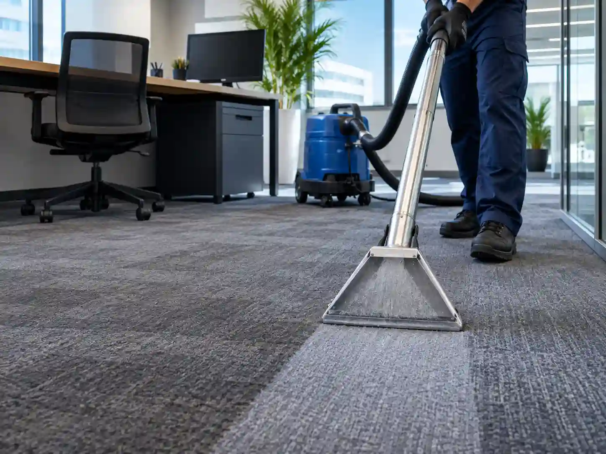
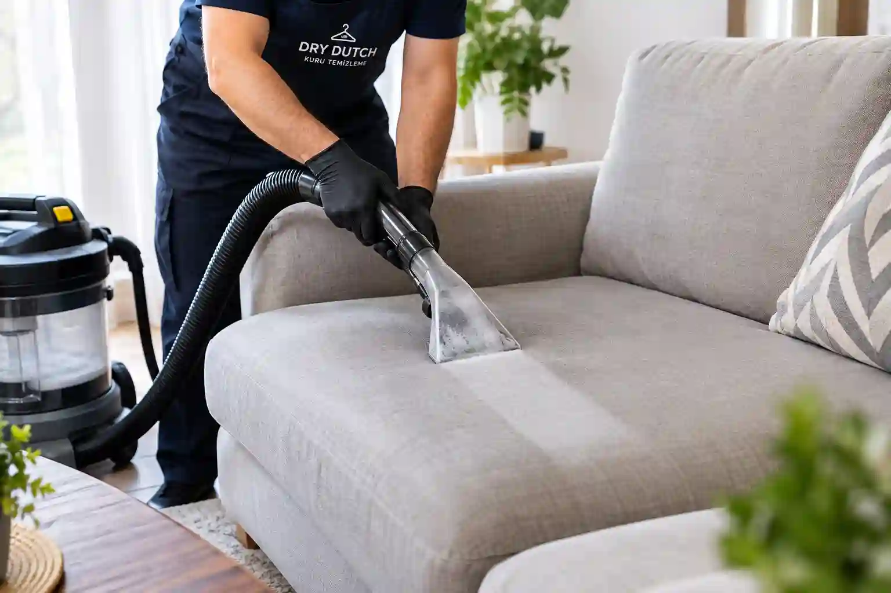
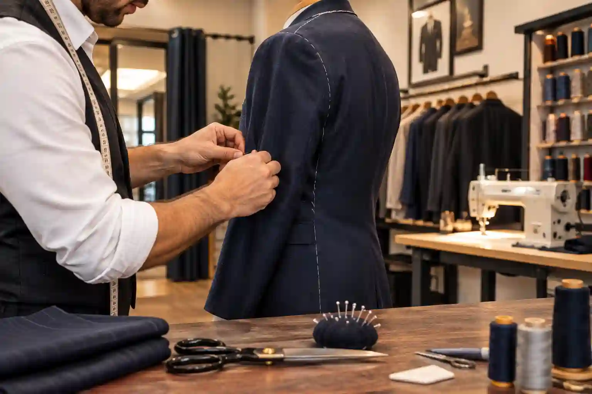

Ümraniye Profesyonel Ofis Bakımı
Ümraniye bölgesindeki şirketler ve çalışma alanları için prestij koruyan kurumsal temizlik ve bakım çözümleri üretiyoruz. Ofis ortamında sağlığı ön planda tutan profesyonel ekibimizle, ofisinizdeki tüm tekstil ürünlerini ilk günkü yeniliğine kavuşturuyoruz.
- Kurumsal anlaşmalara özel periyodik temizlik
- Ofis perdeleri, sandalyeleri ve zemin temizliği
- Esnek saatlerde mesai dışı hizmet imkanı

Ümraniye Yerinde Koltuk Yıkama
Ümraniye ve çevre semtlerdeki ev veya ofisinizde bulunan koltuk, kanepe ve yataklardaki inatçı lekeleri, toz akarlarını ve kötü kokuları; dokuya zarar vermeyen özel anti-alerjenik solüsyonlarla derinlemesine arındırıyoruz.
- Yerinde profesyonel yıkama hizmeti
- İnatçı lekelere karşı özel formüller
- Hızlı kurutma ve hemen kullanım avantajı

Ümraniye Terzi ve Kıyafet Tamiri
Ümraniye'deki uzman terzi kadromuzla, en sevdiğiniz kıyafetleriniz küçük hasarlar yüzünden dolapta beklemesin. Kıyafetlerinizi ustalıkla onarıyor, bedeninize en uygun şekilde yeniden şekillendirip kullanım ömrünü uzatıyoruz.
- Paça boyu yapımı ve daraltma işlemleri
- Fermuar, astar ve düğme değişimi
- Sökük, yırtık onarımı ve model yenileme
Ümraniye'nin En Kapsamlı Ekstra Kuru Temizleme ve Bakım Merkezi
Hızlı ve Güvenilir Servis
Sadece kıyafetlerinizi temizlemekle kalmıyor, Ümraniye kuru temizleme ekstra hizmetleri kapsamında Yamanevler, Tepeüstü, Şerifali, Çakmak ve Esenevler başta olmak üzere tüm mahallelere ulaşıyoruz.
Ofis ve Ev Çözümleri
Yoğun temponuzda ofis bakımı ve yerinde koltuk yıkama ihtiyaçlarınızı profesyonel ekibimiz üstleniyor. Kumaş yapısına uygun en doğru müdahaleyle eşyalarınızın ömrünü uzatıyoruz.
Uzman Terzi Hizmeti
Ümraniye terzi hizmetimizle, tadilat gerektiren veya bedeninize tam oturmasını istediğiniz kıyafetlerinizi usta ellerde onarıyor ve kusursuz bir şekilde yeniden şekillendiriyoruz.